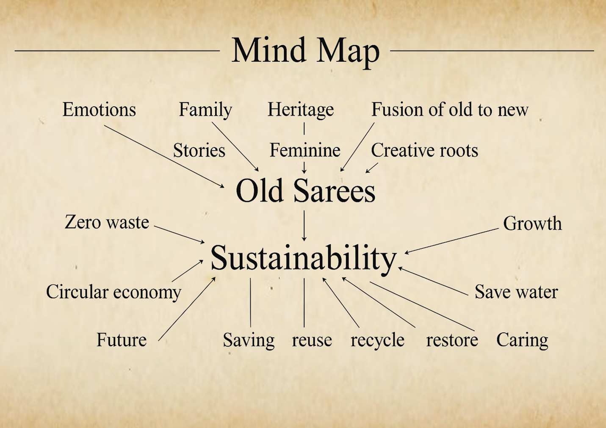
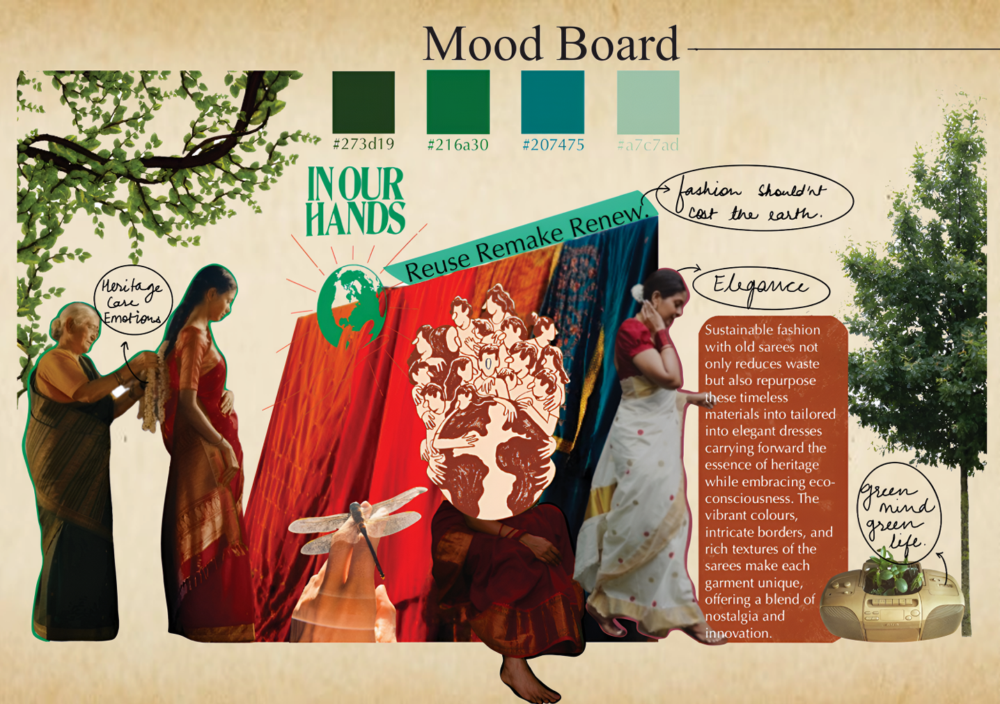
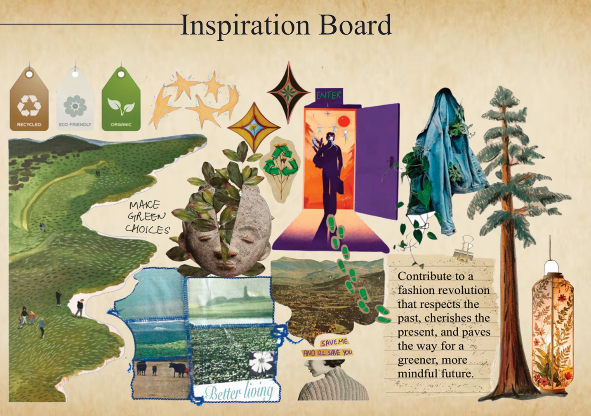
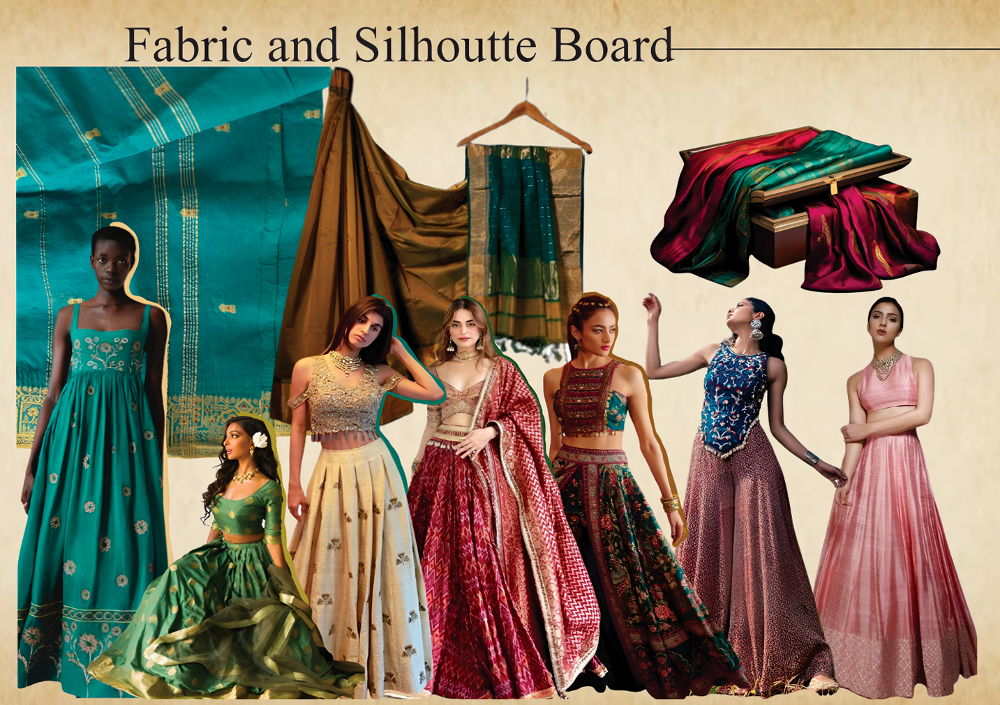
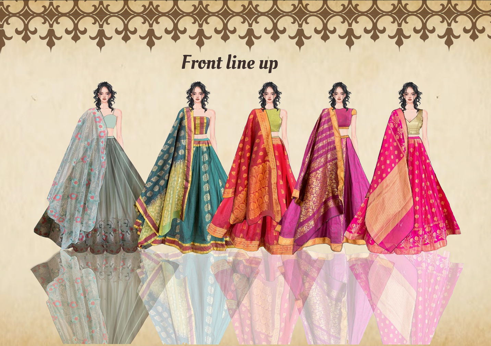
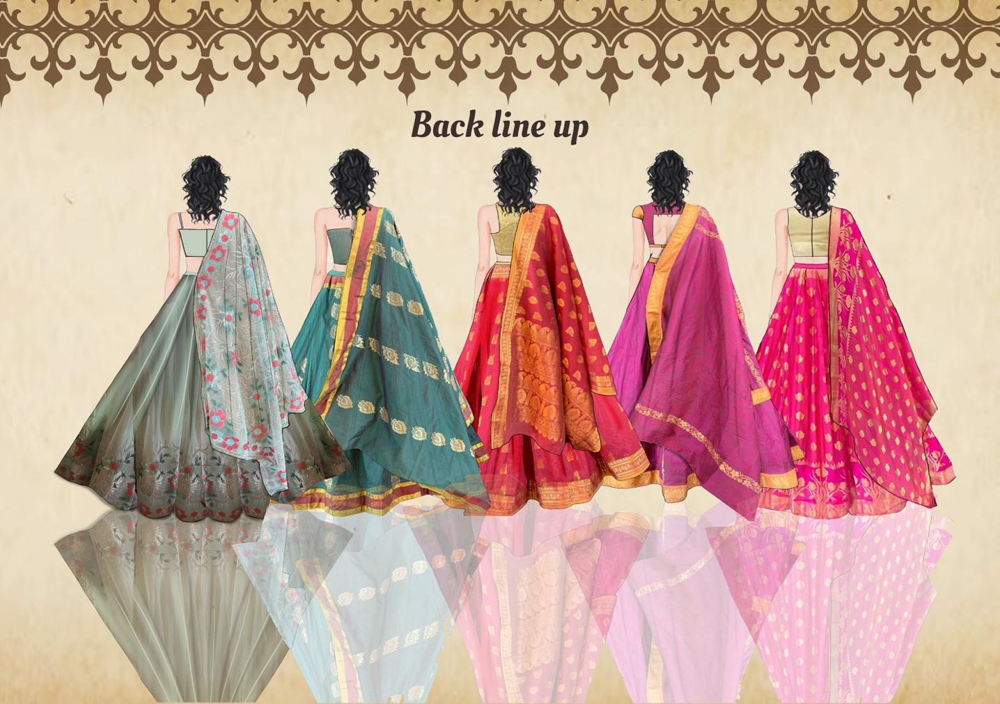
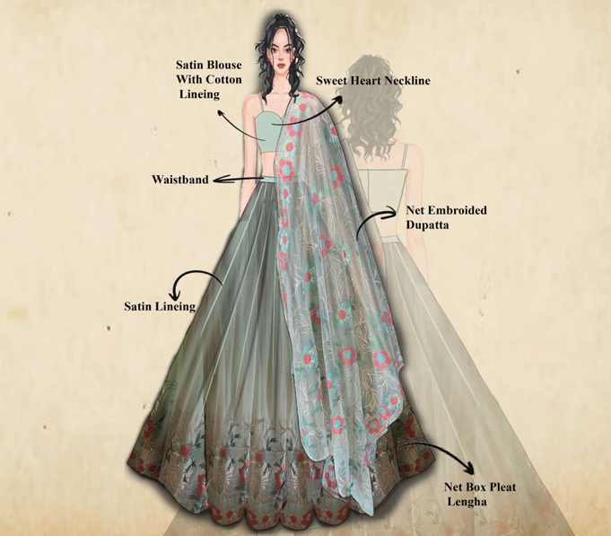
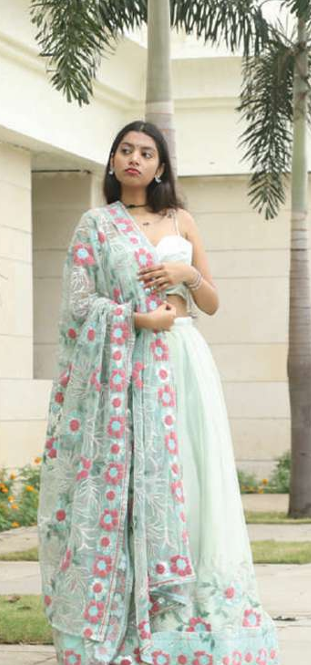
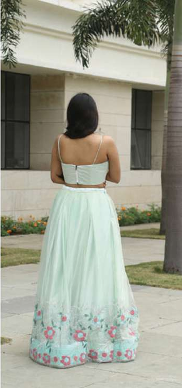

Concept Note
In a world where sustainability is becoming increasingly important, repurposing old sarees into new garments is a creative way to blend tradition with modern fashion. Each saree tells a story — of generations, culture, and craftsmanship — and by transforming these fabrics into contemporary pieces, we breathe new life into these memories.
Sustainable fashion with old sarees not only reduces waste but also repurposes these timeless materials into tailored, elegant dresses carrying forward the essence of heritage while embracing eco-consciousness. The vibrant colours, intricate borders, and rich textures of the sarees make each garment unique, offering a blend of nostalgia and innovation.
Mind Map
The concept traces two linked threads: old sarees — carrying emotion, family, heritage and the fusion of old to new — feeding directly into sustainability, built on zero waste, circular economy, saving, reuse, recycling, restoration and care.

Mood Board & Inspiration
The mood board is anchored around the line "Reuse. Remake. Renew." and the belief that fashion shouldn't cost the earth — built on a palette of deep greens and teals drawn directly from heritage saree colourways.


Fabric & Silhouette Board
Silhouettes were developed by draping vintage saree yardage into structured lehenga skirts, paired with fitted cropped blouses and the original saree pallu re-purposed as a floating dupatta — carrying forward the drape and border-work of the source textile.

Front & Back Line-Up
A five-look line-up developed in a single silhouette family — sea green, teal, red, magenta and pink — each retaining its saree's original gold zari border as skirt hem and dupatta edge detailing.


Garment Specification — Hero Look
A sea-green lehenga with a structured sleeveless blouse, paired with a sheer floral-embroidered dupatta that adds a graceful flow to the silhouette — made from an embroidered net saree, with a satin-lined lehenga for fluid drape and a cotton lining used inside for comfort and structure.
| Spec | Detail | Spec | Detail |
|---|---|---|---|
| Season | SS 2026 | Colour | Sea Green — #a2bab9 |
| Gender | Female | Trims | Zippers and Hook |
| Size Range | 8" | Across Chest | 6 5/8" |
| Circumference of Chest | 35" | Full Length of Skirt | 39.5" |
| Height of Waistband | 1" | Circumference of Waistband | 26.5" |
| Zipper Size (skirt) | 7" | Neckline | Sweetheart |
Construction details — satin blouse with cotton lining, waistband, net embroidered dupatta, satin lining, net box-pleat lehenga skirt.

Final Photography
The completed sea-green garment, styled and photographed on location.


Documents
Full sustainable design portfolio including mood boards, technical specifications and final photography.